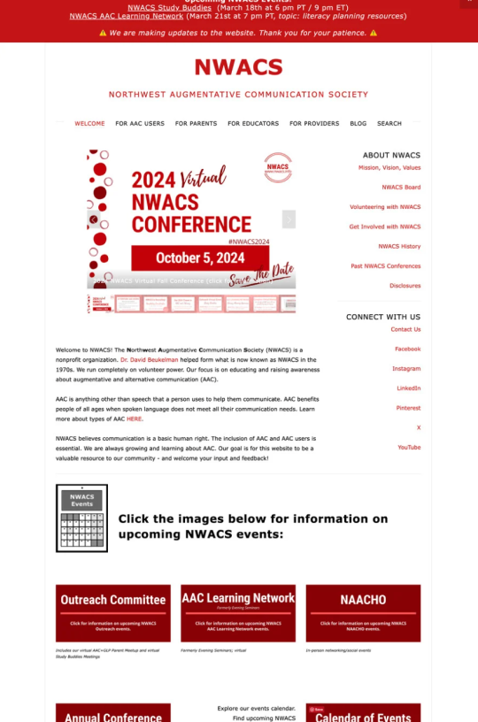
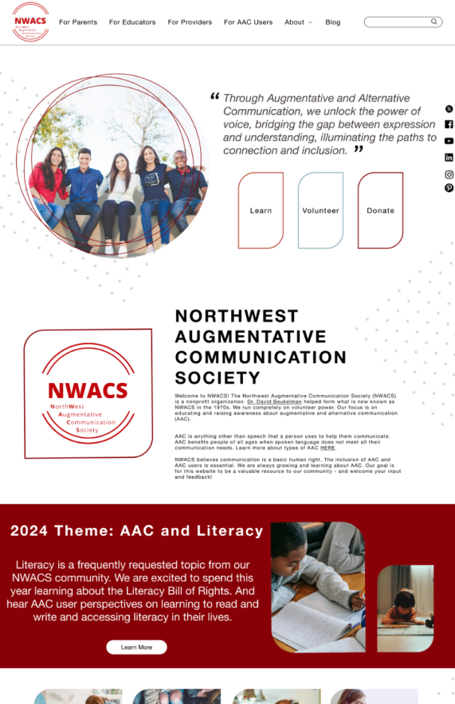

Overview
NWACS focus is on empowering individuals with a communication deficit, by connecting them with technology and other tools that allow them to use their voice in alternative ways. A full redesign was created in Figma.
Project Details
Team
Four people who evenly divided research & design roles
Role
My role included user research, prototyping, wireframes, UI Style Guide, slide deck, and presentation.
Time
2.5 weeks to complete testing & re-design
Problem
The current NWACS site has decent overall content organization, but users struggle to locate specific content due to poor content chunking, excessive text, and lack of visual balance. Users have to spend the majority of their time scanning through bodies of text to find the information they are looking for and can easily miss their target if they aren’t focused enough or aren’t scanning for the correct words. Scanning huge bodies of texts takes more time than having symbols, images, and key headings that are automatically recognized. This extra work can prove frustrating for users and can even lead them to abandon the task altogether--as one of our users did. Additionally, the current visual design aims to be simple and straight forward, but the bold red and white color scheme is loud, further adds to the overall sameness of information and makes it difficult to identify key information.
Research
The first step was to figure our what our users need and what the current website does not provide. A User Persona was to:
- Understand the problem
- identify user needs
- and define project goals.
Then we needed to figure to research & evaluate the functionality, intuitiveness, and design of NWACS.info. This included:
- Primary User testing
- Heuristic Evaluations
- Mid-fidelity 5-second user testing
The results were that the current NWACS site has decent overall content organization, but users struggled to locate specific content due to poor content chunking, excessive text, and lack of visual balance. Users had to spend the majority of their time scanning through bodies of text to find the information they are looking for and could easily miss their target if they aren’t focused enough or aren’t scanning for the correct words. Scanning huge bodies of texts took more time than having symbols, images, and key headings that are automatically recognized. This extra work proved frustrating for users and even lead them to abandon the task altogether - as one of our users did.
Definition

From all the data collected, the tasks were to make the page feel light and airy, and use transparent images and graphics were used when possible. It was a high priority to ensure the brand’s scarlet color had the most impact and was still approachable; to do this the color was used in minimalistic organic shapes and lines.
Key Heuristic Evaluation takeaways included:
- Search bar lacks readily recognizable iconography and graphics
- Side Menu is overly complicated and adds to visual noise.
- Second set of social links is redundant.
- Button styles and links are inconsistent in format and click ability.
- Events Calendar has similar visual priority for all events including the “biggest event of the year.”
- The calendar also lacks consistent formatting in the bottom row of cards.
Ideation & Prototyping
The wireframes started with opaque shapes, these were later adjusted to transparent line objects which allowed visibility of under layers and creates a light pass-through feeling. The finished prototype is easy to navigate, puts important information front and center, and is a visually pleasant experience.
Key Heuristic Evaluation takeaways included:
- Search bar lacks readily recognizable iconography and graphics
- Side Menu is overly complicated and adds to visual noise.
- Second set of social links is redundant.
- Button styles and links are inconsistent in format and click ability.
- Events Calendar has similar visual priority for all events including the “biggest event of the year.”
- The calendar also lacks consistent formatting in the bottom row of cards.
Testing
Initial redesign wireframes focused strongly on information chunking by simplifying text and combining it with consistent graphics and imagery. Three 5-second user tests were completed on mid-fidelity wireframes to gather information about user’s first impressions and isolate any potential issues. The testing results were all positive overall and didn’t suggest that major changes were necessary, so the design process moved forward.
Before
After
Let's Talk!
Copyright 2024 @ www.Alicia-Baker.com. All Rights Reserved.